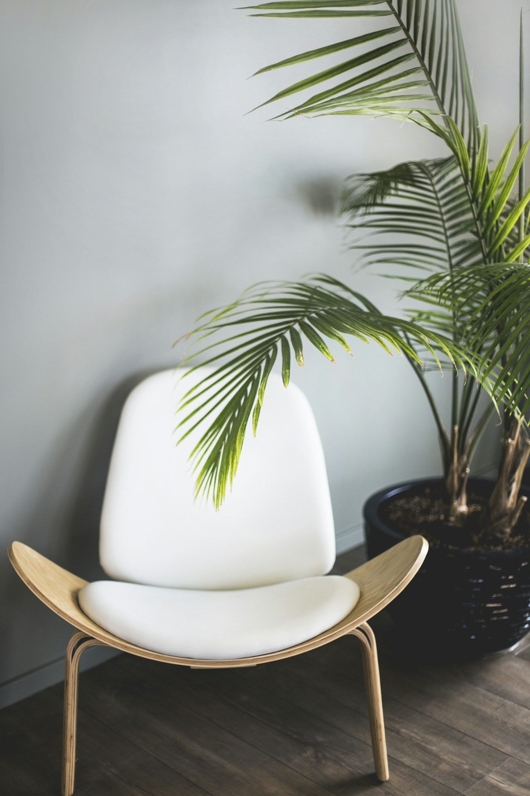

01 / EVERYDAY FURNITURE
A useful companion.
Side tables, benches and small desks, sized for the corners that need them.

MADE SLOWLY. LIVED WITH DAILY.
Honest materials. Useful objects.
Custom woodwork with a quiet sense of belonging.
FROM THE WORKBENCH
Small-batch pieces and considered commissions. Nothing overcomplicated. Just good proportions and wood worth touching.
01 / EVERYDAY FURNITURE
Side tables, benches and small desks, sized for the corners that need them.
02 / SHELVES & SMALL BUILT-INS
Floating shelves and straightforward storage shaped around your room.
03 / A SECOND CHAPTER
Loose joints, worn surfaces and small repairs. Share photos so we can assess whether a repair is practical.
Assessment from $45Illustrative concept pricing. Materials, dimensions, finish and installation determine the final quote. Drawn objects are concept designs.
LESS RUSH. MORE INTENTION.
Pine & Plane is an imagined one-bench workshop in Goldsboro, built around the pleasure of making something useful by hand.
We like natural character, visible joinery and finishes that let wood feel like wood. The goal is a piece that feels at home from its first day.
Start with the space, how you use it and a comfortable budget.
Review dimensions, materials, finish and an agreed estimate.
Allow a typical four to six weeks after design approval, depending on scope.
GRAIN & OTHER DETAILS
We can work toward a compatible wood tone and style. Natural grain and aging mean an exact color match is rarely possible.
Pine, oak and walnut are starting points. We select materials based on the piece, intended use and budget rather than a fixed catalog.
Local delivery around Goldsboro can be included in the project estimate. Larger pieces and installation require an access conversation.
Use a soft, slightly damp cloth, dry promptly and avoid prolonged moisture or direct heat. Follow the care guidance for your specific finish.
THERE'S A PROJECT IN THERE
Goldsboro, North Carolina
Workshop visits by appointment
Monday–Friday / 9am–5pm
hello@pineandplane.example
(252) 555-0124
Fictional studio and contact details for this portfolio concept.